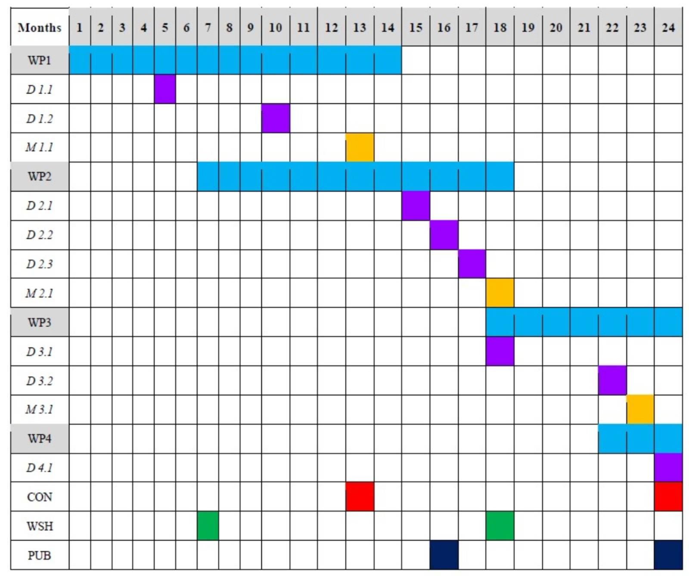

Objectives:
- Prepare a well-curated database of nanoparticle ecotoxicity data
- Categorize the collected data
- Employ QSAR, i-QSTTR, and RA approaches to conduct SSD modeling
- Evaluate the variability and sensitivity profiles
- Assess the predictive accuracy of existing RA techniques
- Suggest an improved RA technique
- Establish a correlation between the ecotoxicity of NPs across species
- Identify practical case studies
- Develop user-friendly computational tools
Work Planned
Gantt Chart:
- Work package (WP)
- Deliverable (D)
- Milestone (M)
- Conferences (CON)
- Workshops (WSH)
- Publications (PUB)

Expected Outcome:
Oveview:
- Nano-Ecotoxicity database
- Better understanding of NPs sensitivity profiles
- ML models predicting Nano-Ecotoxicity
- SSDs models
- SSDs predicting tool/web-based application
- Dissemination of the results